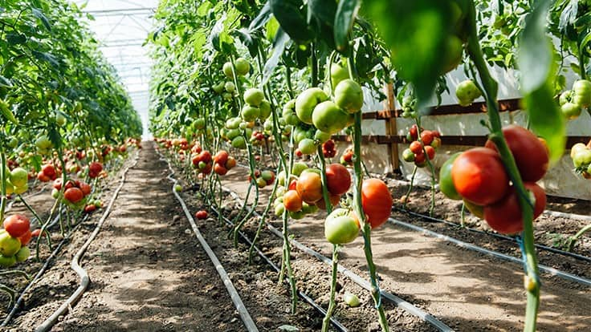
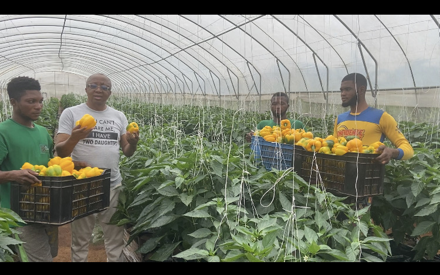

Five Ways to Improve Greenhouse Productivity
Practical actions for stronger crop management.
Practical insights, tools, learning resources and research for agricultural entrepreneurs and ecosystem partners.
Browse Resources →Practical insights.
Step-by-step guides.
Expert sessions.
Data and reports.
Enterprise journeys.
Ideas and experiments.

Practical actions for stronger crop management.

A structured path from idea to implementation.

Lessons from protected cultivation.
How connected infrastructure can expand opportunity.
Curated pathways guide users from agricultural foundations to enterprise, innovation and leadership.
Foundations and opportunity discovery.
Production, operations and business management.
Finance, partnerships and market growth.